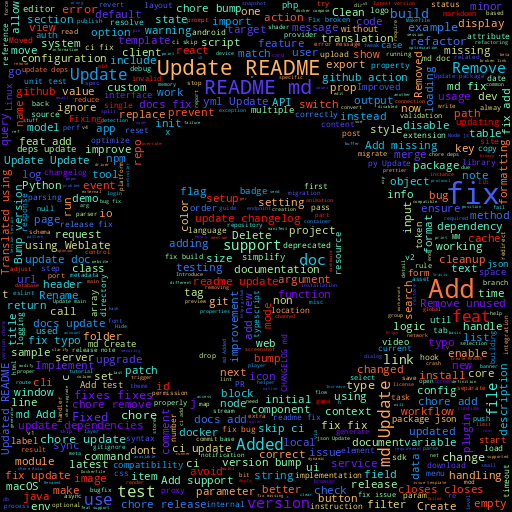
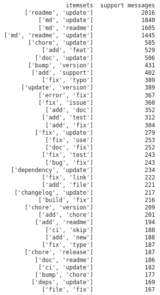

This page compiles various statistics and insights gathered from web-crawling thousands of GitHub repositories.
For more information on the project and a searchable index of interesting open-source projects, check out the main page.
As expected, web projects dominate the charts, with the sum of JavaScript & TypeScript repositories being almost 4x higher than the count of the third most popular language - that being Go, also popular in web development, and having just slightly more repositories in our dataset than Python.
Shell scripts remain in high usage for automating all sorts development & build processes, now via CI services like GitHub Actions.
The Hacktober tag is the most used one across all our collected repositories; it refers to an annual event organized by DigitalOcean where contributors to repositories tagged with it can win all sorts of goodies, promoting open-source collaboration.
Topics related to web development like frameworks are the next most used-tags, as expected from the prior analysis of most-used languages.
Projects that use Docker images for reliable deployments are aplenty, and we can see that the machine learning & deep learning trend also has enough repositories to make it to the top 20 - though it appears our dataset has fewer of those than Minecraft modding projects, somehow.
While gathering data of the repositories, we also took their most recent commit messages to study how they're written.
The first thing that came to our mind was of course to make a wordcloud out of all 60k commit messages we had gathered - having filtered out bot messages and default ones like "Merge Pull Request":
Some keywords like "Add", "Update", "Fix" stick out quite clearly, but to get a clearer look at the top words we need to go back to a table:
We can clearly see that there's some words that are very standard among developers. Upon a closer look, these are also very unique in regards to semantic meaning in software development, with almost no ambiguity:
Words related to development cycle:
Words related to maintenance:
When in doubt on which single word to center a commit message around, the previous list is a great reference. From how common they are among developers, you can be sure that your commit's overall intent will be clear if you use them.
Our intent when gathering this data was to identify common writing styles - for that, we had to get more elaborate. We decided to perform two types of analysis on the commit messages:
Using the apriori algorithm, we were able to determine the most common pairs of words within commits:
These are unfortunately much less varied than we expected; they largely consist of pairings of words to denote documentation/readme updates as well as fixing issues (bugs, typos, errors). This does however indicate that messages to denote those 2 kinds of commits are fairly standardized.
We afterwards did a lexical analysis of the commits; here's a distribution of all the categories that NLTK recognizes:
Nouns are dominant as expected, however it's important to note the preference for singular forms. The use of parenthesis is also common to clarify details within a commit. Orthotropes (#) are also commonly used to reference issues or pull requests by their number, hence why "cardinal number" is so high up.
And here's the distribution for verb tenses used:
The base form is the most used one. Gerund (-ing) sees a lot of use, however not as the main verb in a commit, but rather as a subject - ex. "Fixes #36: querying data using Select and Model". Other verb tenses are used in quite an equiprobable distribution. As such, you should largely base your choice of verb tense according to what's already the standard in your repository, or use the base form if in doubt.
The average commit is only 6 words. From all this we can conclude that short & concise commit messages are preferred, using just 1 verb at the start to immediately communicate the commit's purpose, followed by nouns to detail what exactly changed, and details or references to issues/PRs using parenthesis and #, if applicable.